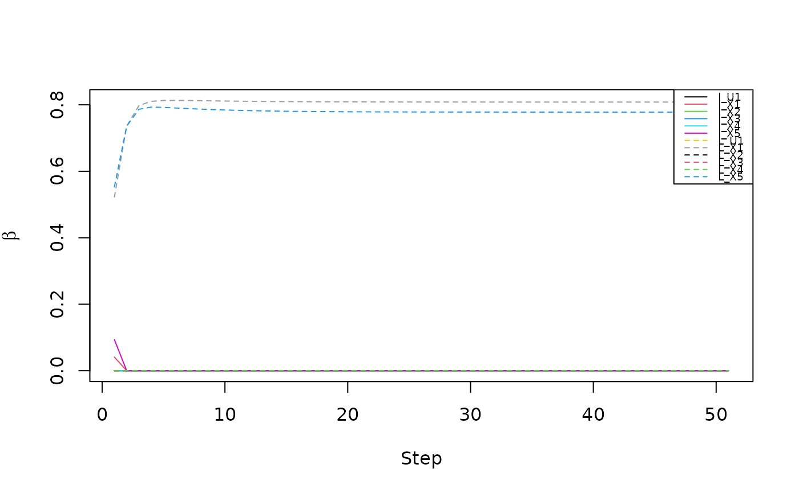

Simulate data under a mixture cure model.
Usage
generate_cure_data(
n = 400,
j = 500,
nonp = 2,
train_prop = 0.75,
n_true = 10,
a = 1,
rho = 0.5,
itct_mean = 0.5,
cens_ub = 20,
alpha = 1,
lambda = 2,
same_signs = FALSE,
model = "weibull"
)Arguments
- n
an integer denoting the total sample size.
- j
an integer denoting the number of penalized predictors which is the same for both the incidence and latency portions of the model.
- nonp
an integer denoting the number of unpenalized predictors (which is the same for both the incidence and latency portions of the model).
- train_prop
a numeric value in [0, 1) representing the fraction of `n` to be used in forming the training dataset.
- n_true
an integer less than `j` denoting the number of variables truly associated with the outcome (i.e., the number of covariates with nonzero parameter values) among the penalized predictors.
- a
a numeric value denoting the effect size (signal amplitude) which is the same for both the incidence and latency portions of the model.
- rho
a numeric value in [0, 1) representing the correlation between adjacent covariates in the same block.
- itct_mean
a numeric value representing the expectation of the incidence intercept which controls the cure rate.
- cens_ub
a numeric value representing the upper bound on the censoring time distribution which follows a uniform distribution on (0,
cens_ub].- alpha
a numeric value representing the shape parameter in the Weibull density.
- lambda
a numeric value representing the rate parameter in the Weibull density.
- same_signs
logical, if TRUE the incidence and latency coefficients have the same signs.
- model
type of regression model to use for the latency portion of mixture cure model. Can be one of the following:
"weibull"to generate times from a Weibull distribution."GG"to generate times from a generalized gamma distribution."Gompertz"to generate times from a Gomertz distribution."nonparametric"to generate times non-parametrically."GG_baseline"to generate times from a generalized gamma baseline distribution.
Value
- training
training data.frame which includes Time, Censor, and covariates. Variables prefixed with
"U"indicates unpenalized covariates and is equal to the value passed tononp(default is 2). Variables prefixed with"X"indicates penalized covariates and is equal to the value passed toj.- training_y
the true status for the training set: uncured = 1; cured = 0
- testing
testing data.frame which includes Time, Censor, Y (the true uncured = 1; cured = 0 status), and covariates. Variables prefixed with
"U"indicates unpenalized covariates and is equal to the value passed tononp(default is 2). Variables prefixed with"X"indicates penalized covariates and is equal to the value passed toj.- testing_y
the true status for the testing set: uncured = 1; cured = 0
- parameters
a list including: the indices of true incidence signals (
nonzero_b), indices of true latency signals (nonzero_beta), unpenalized incidence parameter values (b_u), unpenalized latency parameter values (beta_u), parameter values for the true incidence signals among penalized covariates (b_p_nz), parameter values for the true latency signals among penalized covariates (beta_p_nz), parameter value for the incidence intercept (itct)
Examples
library(survival)
withr::local_seed(1234)
# This dataset has 2 penalized features associated with the outcome,
# 3 penalized features not associated with the outcome (noise features), and 1
# unpenalized noise feature.
data <- generate_cure_data(n = 1000, j = 5, n_true = 2, nonp = 1, a = 2)
# Extract the training data
training <- data$training
# Extract the testing data
testing <- data$testing
# To identify the features truly associated with incidence
names(training)[grep("^X", names(training))][data$parameters$nonzero_b]
#> [1] "X1" "X5"
# To identify the features truly associated with latency
names(training)[grep("^X", names(training))][data$parameters$nonzero_beta]
#> [1] "X1" "X5"
# Fit the model to the training data
fitem <- cureem(Surv(Time, Censor) ~ ., data = training,
x_latency = training)
# Examine the estimated coefficients at the (default) minimum AIC
coef(fitem)
#> $b0
#> [1] 0.9340511
#>
#> $beta_inc
#> U1 X1 X2 X3 X4 X5
#> 0 0 0 0 0 0
#>
#> $beta_lat
#> U1 X1 X2 X3 X4 X5
#> 0.0000000 0.8082738 0.0000000 0.0000000 0.0000000 0.7780580
#>
# As the penalty increases, the coefficients for the noise variables shrink
# to or remain at zero, while the truly associated features have coefficient
# paths that depart from zero. This shows the model's ability to distinguish
# signal from noise.
plot(fitem, label = TRUE)
